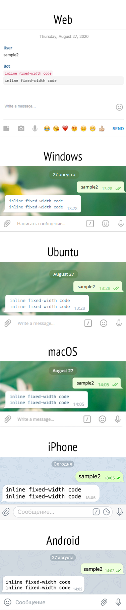

Вернуться --------------------------------------------------------------------------------Визуальные различия между <code> и <pre>const Telegraf = require('telegraf'); const bot = new Telegraf(process.env.BOT_TOKEN); bot.hears('sample2', function(ctx) { return ctx.replyWithHTML( '<code>inline fixed-width code</code>\n' + '<pre>inline fixed-width code</pre>' ); }); bot.launch();123Визуально разница есть только в Web версии